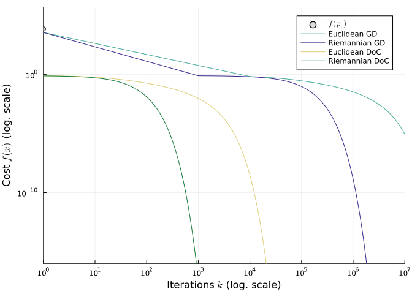

Solving Rosenbrock with the Difference of Convex Algorithm
Ronny Bergmann 2023-06-06
Introduction
This example illustrates how the 📖 Rosenbrock problem can be rephrased as a difference of convex problem and with a new metric on Euclidean space. This example is the code that produces the results in [BFSS23], Section 7.2.
Both the Rosenbrock problem
\[ \operatorname*{argmin}_{x\in ℝ^2} a\bigl( x_1^2-x_2\bigr)^2 + \bigl(x_1-b\bigr)^2,\]
where $a,b>0$ and usually $b=1$ and $a \gg b$, we know the minimizer $x^* = (b,b^2)^\mathrm{T}$, and also the (Euclidean) gradient
\[\nabla f(x) = \begin{pmatrix} 4a(x_1^2-x_2)\\ -2a(x_1^2-x_2) \end{pmatrix} + \begin{pmatrix} 2(x_1-b)\\ 0 \end{pmatrix}.\]
They are even available already here in ManifoldExamples.jl, see RosenbrockCost and RosenbrockGradient!!.
Furthermore, the RosenbrockMetric can be used on $ℝ^2$, that is
\[⟨X,Y⟩_{\mathrm{Rb},p} = X^\mathrm{T}G_pY, \qquad G_p = \begin{pmatrix} 1+4p_1^2 & -2p_1 \\ -2p_1 & 1 \end{pmatrix},\]
In this example we want to explore four different approaches to minimizing the Rosenbrock example, that are all based on first-order methods, i.e. using a gradient but not a Hessian.
- The Euclidean Gradient
- The Riemannian gradient descent with respect to the
RosenbrockMetric - The Euclidean Difference of Convex Algorithm
- The Riemannian Difference of Convex Algorithm respect to the
RosenbrockMetric
Where we obtain a difference of convex problem by writing
\[f(x) = a\bigl( x_1^2-x_2\bigr)^2 + \bigl(x_1-b\bigr)^2 = a\bigl( x_1^2-x_2\bigr)^2 + 2\bigl(x_1-b\bigr)^2 - \bigl(x_1-b\bigr)^2\]
that is
\[g(x) = a\bigl( x_1^2-x_2\bigr)^2 + 2\bigl(x_1-b\bigr)^2 \quad\text{ and }\quad h(x) = \bigl(x_1-b\bigr)^2\]
using LinearAlgebra, Random, Statistics
using Manifolds, Manopt, ManoptExamples
using NamedColors, Plots
import Manopt: set_parameter!
Random.seed!(42)paul_tol = load_paul_tol()
indigo = paul_tol["mutedindigo"]
green = paul_tol["mutedgreen"]
sand = paul_tol["mutedsand"]
teal = paul_tol["mutedteal"]
grey = paul_tol["mutedgrey"]To emphasize the effect, we choose a quite large value of a.
a = 2*10^5
b = 1and use the starting point and a direction to check gradients
p0 = [0.1, 0.2]The Euclidean Gradient Descent.
For the Euclidean gradient we can just use the same approach as in the Rosenbrock example
M = ℝ^2
f = ManoptExamples.RosenbrockCost(M; a=a, b=b)
∇f!! = ManoptExamples.RosenbrockGradient!!(M; a=a, b=b)define a common debug vector
debug_vec = [
(:Iteration, "# %-8d "),
(:Cost, "F(x): %1.4e"),
" ",
(:Change, "|δp|: %1.4e | "),
(:GradientNorm, "|grad f|: %1.6e"),
:Stop,
"\n",
]and call the gradient descent algorithm
Eucl_GD_state = gradient_descent(M, f, ∇f!!, p0;
evaluation=InplaceEvaluation(),
debug=[debug_vec...,10^7],
stopping_criterion=StopAfterIteration(10^7) | StopWhenChangeLess(M, 1e-16),
record=[:Iteration, :Cost],
return_state=true,
)Initial F(x): 7.2208e+03
# 10000000 F(x): 8.9937e-06 |δp|: 1.3835e+00 | |grad f|: 8.170355e-03
The algorithm reached its maximal number of iterations (10000000).
# Solver state for `Manopt.jl`s Gradient Descent
After 10000000 iterations
## Parameters
* retraction method: ExponentialRetraction()
## Stepsize
ArmijoLinesearch(;
initial_stepsize=1.0
retraction_method=ExponentialRetraction()
contraction_factor=0.95
sufficient_decrease=0.1
)
## Stopping criterion
Stop When _one_ of the following are fulfilled:
Max Iteration 10000000: reached
|Δp| < 1.0e-16: not reached
Overall: reached
This indicates convergence: No
## Debug
:Iteration = [(:Iteration, "# %-8d "), (:Cost, "F(x): %1.4e"), " ", (:Change, "|δp|: %1.4e | "), (:GradientNorm, "|grad f|: %1.6e"), "\n", 10000000]
:Stop = :Stop
## Record
(Iteration = RecordGroup([RecordIteration(), RecordCost()]),)The Riemannian Gradient Descent.
For the Riemannian case, we define
M_rb = MetricManifold(M, ManoptExamples.RosenbrockMetric())MetricManifold(Euclidean(2; field=ℝ), ManoptExamples.RosenbrockMetric())and the gradient is now adopted to the new metric
function grad_f!(M, X, p)
∇f!!(M, X, p)
riemannian_gradient!(M, X, p, X)
return X
end
function grad_f(M, p)
X = zero_vector(M, p)
return grad_f!(M, X, p)
endR_GD_state = gradient_descent(M_rb, f, grad_f!, p0;
evaluation=InplaceEvaluation(),
debug=[debug_vec...,10^6],
stopping_criterion=StopAfterIteration(10^7) | StopWhenChangeLess(M_rb, 1e-16),
record=[:Iteration, :Cost],
return_state=true,
)Initial F(x): 7.2208e+03
# 1000000 F(x): 1.3571e-09 |δp|: 9.1006e-01 | |grad f|: 1.974939e-04
# 2000000 F(x): 2.7921e-18 |δp|: 3.6836e-05 | |grad f|: 9.240792e-09
At iteration 2443750 the algorithm performed a step with a change (0.0) less than 1.0e-16.
# Solver state for `Manopt.jl`s Gradient Descent
After 2443750 iterations
## Parameters
* retraction method: ExponentialRetraction()
## Stepsize
ArmijoLinesearch(;
initial_stepsize=1.0
retraction_method=ExponentialRetraction()
contraction_factor=0.95
sufficient_decrease=0.1
)
## Stopping criterion
Stop When _one_ of the following are fulfilled:
Max Iteration 10000000: not reached
|Δp| < 1.0e-16: reached
Overall: reached
This indicates convergence: Yes
## Debug
:Iteration = [(:Iteration, "# %-8d "), (:Cost, "F(x): %1.4e"), " ", (:Change, "|δp|: %1.4e | "), (:GradientNorm, "|grad f|: %1.6e"), "\n", 1000000]
:Stop = :Stop
## Record
(Iteration = RecordGroup([RecordIteration(), RecordCost()]),)The Euclidean Difference of Convex
For the convex case, we have to first introduce the two parts of the cost.
f1(M, p; a=100, b=1) = a * (p[1]^2 - p[2])^2;
f2(M, p; a=100, b=1) = (p[1] - b[1])^2;
g(M, p; a=100, b=1) = f1(M, p; a=a, b=b) + 2 * f2(M, p; a=a, b=b)
h(M, p; a=100, b=1) = f2(M, p; a=a, b=b)and their (Euclidan) gradients
function ∇h!(M, X, p; a=100, b=1)
X[1] = 2*(p[1]-b)
X[2] = 0
return X
end
function ∇h(M, p; a=100, b=1)
X = zero(p)
∇h!(M, X, p; a=a, b=b)
return X
end
function ∇g!(M, X, p; a=100, b=1)
X[1] = 4*a*(p[1]^2-p[2])*p[1] + 2*2*(p[1]-b)
X[2] = -2*a*(p[1]^2-p[2])
return X
end
function ∇g(M, p; a=100, b=1)
X = zero(p)
∇g!(M, X, p; a=a, b=b)
return X
endand we define for convenience
docE_g(M, p) = g(M, p; a=a, b=b)
docE_f(M,p) = docE_g(M,p) - h(M, p; a=a, b=b)
docE_∇h!(M, X, p) = ∇h!(M, X, p; a=a, b=b)
docE_∇g!(M, X, p) = ∇g!(M, X, p; a=a, b=b)
function docE_∇f!(M, X, p)
Y = zero_vector(M, p)
docE_∇g!(M, X, p)
docE_∇h!(M, Y, p)
X .-= Y
return X
endThen we call the difference of convex algorithm on Eucldiean space $ℝ^2$.
E_doc_state = difference_of_convex_algorithm(
M, docE_f, docE_g, docE_∇h!, p0;
gradient=docE_∇f!,
grad_g = docE_∇g!,
debug=[debug_vec..., 10^4],
evaluation=InplaceEvaluation(),
record=[:Iteration, :Cost],
stopping_criterion=StopAfterIteration(10^7) | StopWhenChangeLess(M, 1e-16),
sub_hess=nothing, # Use gradient descent
sub_stopping_criterion=StopAfterIteration(2000) | StopWhenGradientNormLess(1e-16),
return_state=true,
)Initial F(x): 7.2208e+03
# 10000 F(x): 2.9705e-09 |δp|: 1.3270e+00 | |grad f|: 1.388203e-04
# 20000 F(x): 3.3302e-16 |δp|: 1.2173e-04 | |grad f|: 4.541087e-08
At iteration 26549 the algorithm performed a step with a change (0.0) less than 1.0e-16.
# Solver state for `Manopt.jl`s Difference of Convex Algorithm
After 26549 iterations
## Parameters
* sub solver state:
| # Solver state for `Manopt.jl`s Gradient Descent
| After 2000 iterations
|
| ## Parameters
| * retraction method: ExponentialRetraction()
|
| ## Stepsize
| ArmijoLinesearch(;
| initial_stepsize=1.0
| retraction_method=ExponentialRetraction()
| contraction_factor=0.95
| sufficient_decrease=0.1
| )
|
| ## Stopping criterion
|
| Stop When _one_ of the following are fulfilled:
| Max Iteration 2000: reached
| |grad f| < 1.0e-16: not reached
| Overall: reached
| This indicates convergence: No
## Stopping criterion
Stop When _one_ of the following are fulfilled:
Max Iteration 10000000: not reached
|Δp| < 1.0e-16: reached
Overall: reached
This indicates convergence: Yes
## Debug
:Iteration = [(:Iteration, "# %-8d "), (:Cost, "F(x): %1.4e"), " ", (:Change, "|δp|: %1.4e | "), (:GradientNorm, "|grad f|: %1.6e"), "\n", 10000]
:Stop = :Stop
## Record
(Iteration = RecordGroup([RecordIteration(), RecordCost()]),)The Riemannian Difference of Convex
We first have to again defined the gradients with respect to the new metric
function grad_h!(M, X, p; a=100, b=1)
∇h!(M, X, p; a=a, b=b)
riemannian_gradient!(M, X, p, X)
return X
end
function grad_h(M, p; a=100, b=1)
X = zero(p)
grad_h!(M, X, p; a=a, b=b)
return X
end
function grad_g!(M, X, p; a=100, b=1)
∇g!(M, X, p; a=a,b=b)
riemannian_gradient!(M, X, p, X)
return X
end
function grad_g(M, p; a=100, b=1)
X = zero(p)
grad_g!(M, X, p; a=a, b=b)
return X
endWhile the cost of the subgradient can be infered automaticallty, we also have to provide the gradient of the sub problem. For $X \in ∂h(p^{(k)})$ the sunproblem top determine $p^{(k+1)}$ reads
\[\operatorname*{argmin}_{p\in\mathcal M} g(p) - \langle X, \log_{p^{(k)}}p\rangle\]
for which usually the cost and gradient functions are computed automatically in the difference of convex algorithm. However, in our case first the closed form solution for the adjoint differential of the logaithmic map is complicated to compute and second the gradint can even be given in a nicer form. We can first simplify in our case with $X = \operatorname{grad} h(p^{(k)})$ that
\[\phi(p) = g(p) - \langle X, \log_{p^{(k)}}p\rangle = a\bigl( p_{1}^2-p_{2}\bigr)^2 + 2\bigl(p_{1}-b\bigr)^2 - 2(p^{(k)}_1-b)p_1 + 2(p^{(k)}_1-b)p^{(k)}_1,\]
its Euclidean gradient reads
\[\operatorname{grad}\phi(p) = \nabla \varphi(p) = \begin{pmatrix} 4a p_1(p_1^2-p_2) + 4(p_1-b) - 2(p^{(k)}_1-b)\\ -2a(p_1^2-p_2) \end{pmatrix}\]
where we can again employ the gradient conversion from before to obtain the Riemannian gradient.
mutable struct SubGrad{P,T,V}
pk::P
Xk::T
a::V
b::V
end
function (ϕ::SubGrad)(M, p)
X = zero_vector(M, p)
ϕ(M, X, p)
return X
end
function (ϕ::SubGrad)(M, X, p)
X .= [
4 * ϕ.a * p[1] * (p[1]^2 - p[2]) + 4 * (p[1] - ϕ.b) - 2 * (ϕ.pk[1] - ϕ.b),
-2 * ϕ.a * (p[1]^2 - p[2]),
]
riemannian_gradient!(M, X, p, X) # convert
return X
endAnd in orer to update the sub solvers gradient correctly, we have to overwrite
set_parameter!(ϕ::SubGrad, ::Val{:p}, p) = (ϕ.pk .= p)
set_parameter!(ϕ::SubGrad, ::Val{:X}, X) = (ϕ.Xk .= X)And we again introduce for ease of use
docR_g(M, p) = g(M, p; a=a, b=b)
docR_f(M, p) = docR_g(M, p) - h(M, p; a=a, b=b)
docR_grad_h!(M, X, p) = grad_h!(M, X, p; a=a, b=b)
docR_grad_g!(M, X, p) = grad_g!(M, X, p; a=a, b=b)
function docR_grad_f!(M, X, p)
Y = zero_vector(M, p)
docR_grad_g!(M, X, p)
docR_grad_h!(M, Y, p)
X .-= Y
return X
end
docR_sub_grad = SubGrad(copy(M, p0), zero_vector(M, p0), a, b)Then we can finally call the last of our four algorithms to compare, the difference of convex algorithm with the Riemannian metric.
R_doc_state = difference_of_convex_algorithm(
M_rb, docR_f, docR_g, docR_grad_h!, p0;
gradient=docR_grad_f!,
grad_g = docR_grad_g!,
debug=[debug_vec..., 10^6],
evaluation=InplaceEvaluation(),
record=[:Iteration, :Cost],
stopping_criterion=StopAfterIteration(10^7) | StopWhenChangeLess(M_rb, 1e-16),
sub_grad=docR_sub_grad,
sub_hess = nothing, # Use gradient descent
sub_stopping_criterion=StopAfterIteration(2000) | StopWhenGradientNormLess(1e-16),
return_state=true,
)Initial F(x): 7.2208e+03
At iteration 1235 the algorithm performed a step with a change (0.0) less than 1.0e-16.
# Solver state for `Manopt.jl`s Difference of Convex Algorithm
After 1235 iterations
## Parameters
* sub solver state:
| # Solver state for `Manopt.jl`s Gradient Descent
| After 2000 iterations
|
| ## Parameters
| * retraction method: ExponentialRetraction()
|
| ## Stepsize
| ArmijoLinesearch(;
| initial_stepsize=1.0
| retraction_method=ExponentialRetraction()
| contraction_factor=0.95
| sufficient_decrease=0.1
| )
|
| ## Stopping criterion
|
| Stop When _one_ of the following are fulfilled:
| Max Iteration 2000: reached
| |grad f| < 1.0e-16: not reached
| Overall: reached
| This indicates convergence: No
## Stopping criterion
Stop When _one_ of the following are fulfilled:
Max Iteration 10000000: not reached
|Δp| < 1.0e-16: reached
Overall: reached
This indicates convergence: Yes
## Debug
:Iteration = [(:Iteration, "# %-8d "), (:Cost, "F(x): %1.4e"), " ", (:Change, "|δp|: %1.4e | "), (:GradientNorm, "|grad f|: %1.6e"), "\n", 1000000]
:Stop = :Stop
## Record
(Iteration = RecordGroup([RecordIteration(), RecordCost()]),)Comparison in Iterations
fig = plot(;
legend=:topright,
xlabel=raw"Iterations $k$ (log. scale)", ylabel=raw"Cost $f(x)$ (log. scale)",
yaxis=:log,
ylims=(1e-16, 5*1e5),
xaxis=:log,
xlims=(1,10^7),
)
scatter!(fig, [1,], [f(M,p0),], label=raw"$f(p_0)$", markercolor=grey)
egi = get_record(Eucl_GD_state, :Iteration, :Iteration)[1:10000:end] #5308 entries
egc = get_record(Eucl_GD_state, :Iteration, :Cost)[1:10000:end] #5308 entries
plot!(fig, egi, egc, color=teal, label="Euclidean GD")
#
rgi = get_record(R_GD_state, :Iteration, :Iteration)[1:1000:end] # 2444 entries
rgc = get_record(R_GD_state, :Iteration, :Cost)[1:1000:end] # 2444 entries
plot!(fig, rgi, rgc, color=indigo, label="Riemannian GD")
#
edi = get_record(E_doc_state, :Iteration, :Iteration) #26549 entries
edc = get_record(E_doc_state, :Iteration, :Cost) #26549 entries
plot!(fig, edi, edc, color=sand, label="Euclidean DoC")
#
rdi = get_record(R_doc_state, :Iteration, :Iteration) # 1235 entries
rdc = get_record(R_doc_state, :Iteration, :Cost) # 1235 entries
plot!(fig, rdi, rdc, color=green, label="Riemannian DoC")
And we can see that using difference of convex outperforms gradient descent, and using the Riemannian approach required less iterations than their Euclidean counterparts.
Literature
- [BFSS23]
- R. Bergmann, O. P. Ferreira, E. M. Santos and J. C. Souza. The difference of convex algorithm on Hadamard manifolds. Preprint (2023), arXiv:2112.05250.